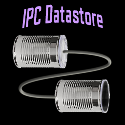

Navigation
index
modules
|
service.ipcdatastore 0.1.0 documentation
»

Quick search
Enter search terms or a module, class or function name.
Index
A
|
B
|
C
|
D
|
F
|
G
|
I
|
N
|
O
|
R
|
S
|
T
|
U
|
V
A
add_persistence() (datastore.DataObjects method)
(ipcclientx.IPCClientX method)
B
background
C
Classes and methods
clearall() (datastore.DataObjects method)
(ipcclientx.IPCClientX method)
clearcache() (datastore.DataObjects method)
(ipcclientx.IPCClientX method)
close() (datastore.DataObjects method)
D
DataObject (class in datastore)
DataObjectBase (class in datastore)
DataObjects (class in datastore)
DataObjectX (class in datastore)
datastore (module)
delete() (datastore.DataObjects method)
(ipcclientx.IPCClientX method)
delete_data() (ipcclientx.IPCClientX method)
F
features
G
get() (datastore.DataObjects method)
(ipcclientx.IPCClientX method)
get_data_list() (datastore.DataObjects method)
(ipcclientx.IPCClientX method)
get_exposed_object() (ipcclient.IPCClient method)
get_traceback() (ipcclient.IPCClient static method)
I
introduction
IPCClient (class in ipcclient)
ipcclient (module)
IPCClientError
IPCClientX (class in ipcclientx)
ipcclientx (module)
ipcclientxerrors (module)
IPCServer (class in ipcserver)
ipcserver (module)
N
NoError
O
ObjectNotSerializableError
R
remove_persistence() (datastore.DataObjects method)
(ipcclientx.IPCClientX method)
restoredata() (datastore.DataObjects method)
(ipcclientx.IPCClientX method)
RestoreFailedError
run() (ipcserver.IPCServer method)
S
savedata() (datastore.DataObjects method)
(ipcclientx.IPCClientX method)
SaveFailedError
server_available() (ipcclient.IPCClient method)
ServerReconnectFailedError
ServerUnavailableError
set() (datastore.DataObjects method)
(ipcclientx.IPCClientX method)
setautosave() (datastore.DataObjects method)
start() (ipcserver.IPCServer method)
stop() (ipcserver.IPCServer method)
T
test_pickle() (ipcserver.IPCServer static method)
U
UnknownError
updatemessage() (ipcclientxerrors.ObjectNotSerializableError method)
(ipcclientxerrors.VarNotFoundError method)
UseCachedCopyError
V
VarNotFoundError
Navigation
index
modules
|
service.ipcdatastore 0.1.0 documentation
»